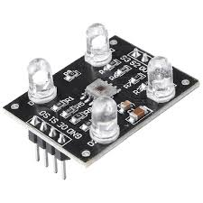
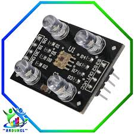

Inicio
📝Conocimientos teóricos.
👩🏻💻Introducción
Sensor de colores

Un sensor de colores es un dispositivo electrónico que permite detectar y diferenciar los colores presentes en una superficie u objeto. Funciona mediante la medición de la intensidad de los tres componentes básicos de la luz: rojo (R), verde (G) y azul (B), conocidos como el modelo RGB.
Este tipo de sensor analiza la luz reflejada por un objeto iluminado y, a través de filtros y fotodiodos, determina el color predominante. Gracias a esta capacidad, los sensores de color se utilizan ampliamente en proyectos de robótica, automatización y sistemas inteligentes.
🔍¿Cómo funciona un sensor de colores?

Un sensor de colores funciona analizando la luz reflejada por un objeto para identificar su color. Para ello, utiliza una combinación de fotodiodos y filtros de color que permiten medir la intensidad de los tres componentes principales de la luz: rojo (R), verde (G) y azul (B).
Pasos básicos de su funcionamiento:
Iluminación del objeto:
El sensor emite una luz (generalmente blanca) hacia el objeto que se desea analizar.
Reflexión de la luz:
La luz incide sobre la superficie del objeto y se refleja, llevando información sobre su color.
Captura de la luz reflejada:
El sensor recoge esa luz reflejada con fotodiodos que están filtrados para registrar las intensidades de rojo, verde y azul por separado.
Procesamiento de la señal:
El sensor convierte esas señales analógicas en valores digitales, que representan cuánta luz de cada color fue detectada.
Determinación del color:
A partir de esos valores, el sistema puede identificar el color predominante o comparar con una base de datos de colores programada previamente.
📚 Bibliografía
Parra, L. A. (2020). Robótica educativa: una estrategia para el desarrollo del pensamiento lógico. Revista Colombiana de Educación, 78, 155–172. https://doi.org/10.17227/rce.num78-9741
Torres, R. (2021). Sensores en robótica: fundamentos y aplicaciones. Revista de Tecnología y Educación, 15(2), 45–56. https://revista-tecnologiaeducacion.edu.ec
TCS34725 Color Sensor. (2023). Adafruit Learning System. Adafruit Industries.
https://learn.adafruit.com/adafruit-color-sensors
Obra publicada con Licencia Creative Commons Reconocimiento Compartir igual 4.0